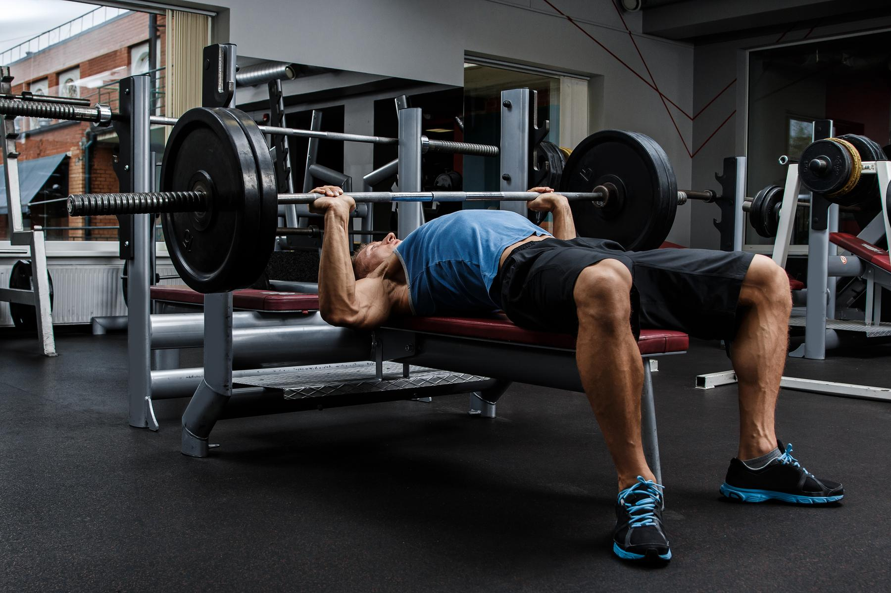

LUNES - Push / Empuje
Press de banca con barra: 3 series de 6 a 8 repeticiones
Press de hombro con mancuernas: 3 series de 5 a 7 repeticiones
Press de banca inclinado con mancuernas: 3 series de 7 a 9 repeticiones
Elevaciones laterales con mancuernas: 3 series de 10 repeticiones
Press francés para tríceps: 3 series de 10 repeticiones
Elevaciones frontales con mancuernas: 2 series de 20 repeticiones
